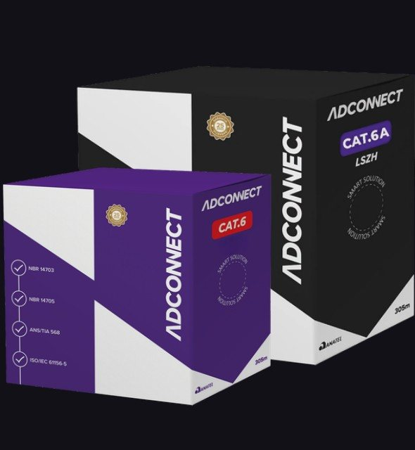
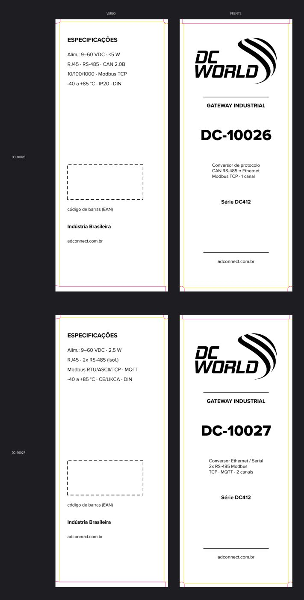
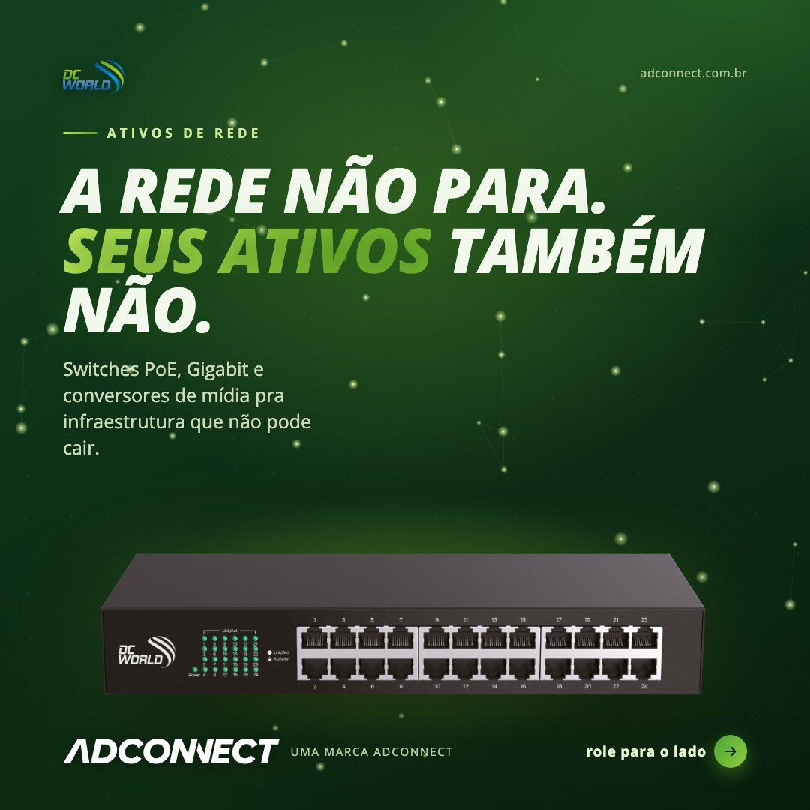
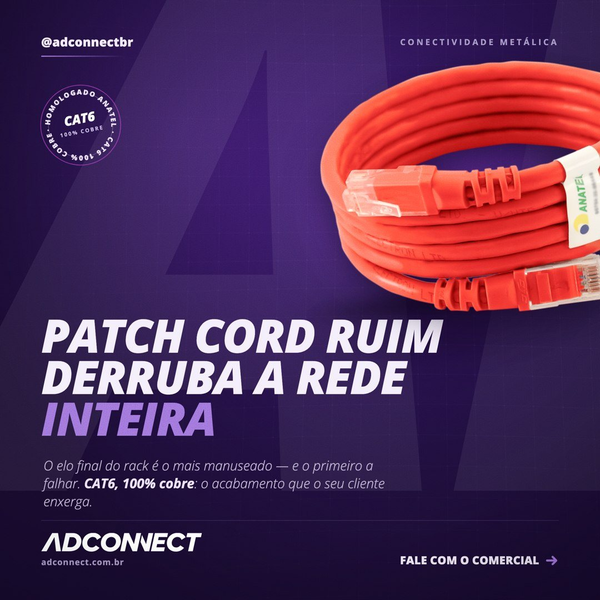
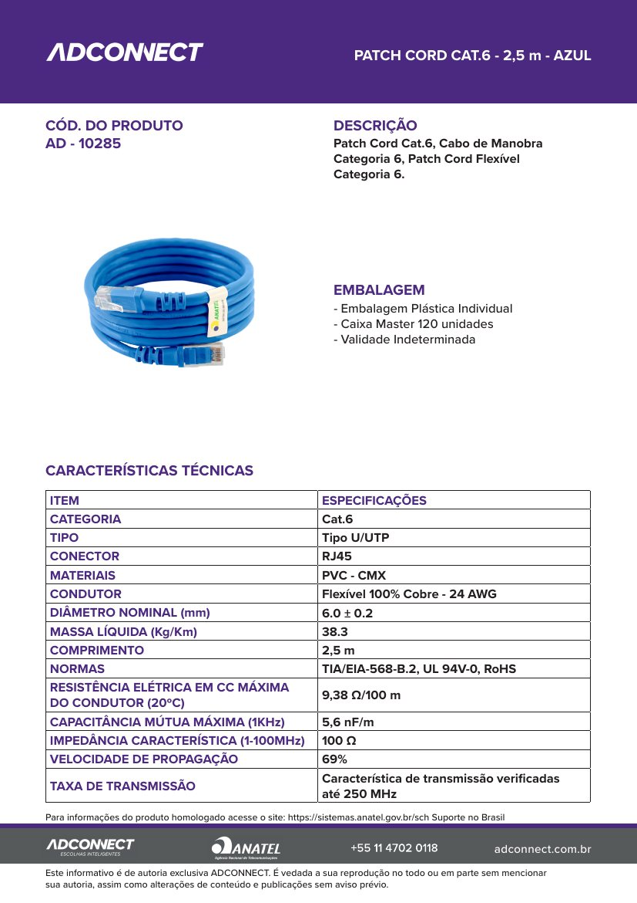
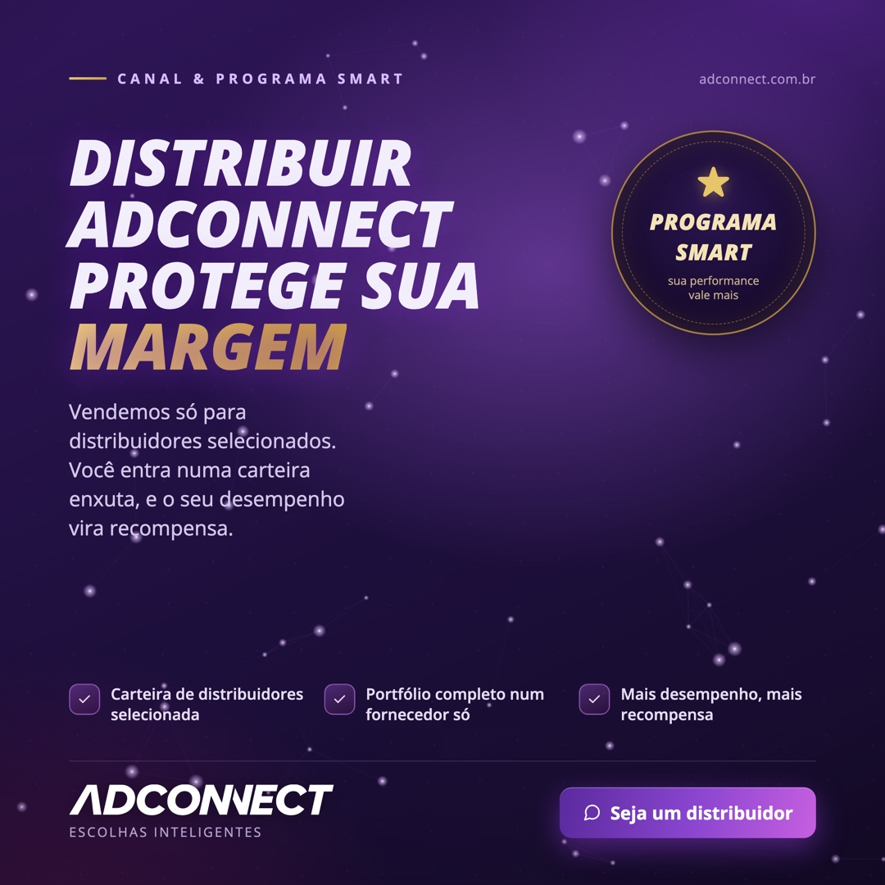

1 · Marca
Uma identidade, tom de voz e padrão de qualidade em tudo o que sai
A vaga pede: garantir consistência na identidade visual, no tom de voz e no posicionamento em todos os materiais e canais, online e offline.
- Cuido da identidade visual das marcas do grupo, incluindo uma segunda marca com identidade própria.
- Reorganizei e escrevi o catálogo de produtos em duas linhas, uma por marca, para simplificar a escolha do cliente.
- Desenho embalagens e etiquetas de produto prontas para impressão, no Photoshop e no Illustrator: a marca também precisa estar certa no ponto de contato físico.
- Na comunicação, a marca fala por provas que o comprador reconhece: presença nacional, homologação e garantia.






2 · Campanhas e calendário
Prioridade, responsável e prazo, e depois medir
A vaga pede: planejar e coordenar campanhas de marca, gerenciar o calendário de conteúdo e iniciativas, e acompanhar a performance para aprender com cada uma.
- Coordeno lançamentos e campanhas entre Produto, Criativo e Vendas, do briefing à publicação, com cronograma, comunicação aos canais e acompanhamento de resultados.
- Planejo o calendário editorial por pilar: autoridade e prova, educação técnica, produto e programa de parceiros.
- Lidero a pessoa responsável pelas redes sociais, com estratégia, prazos e avaliação de desempenho.
- Crio e gerencio campanhas de Google Ads, Meta Ads e LinkedIn Ads para lançamentos, promoções e marca.
Caso: campanha de programação de compra com distribuidores
Objetivo: levar distribuidores da base e prospects a fechar o plano de compras dos meses seguintes.
Canais: régua de e-mail no RD Station e anúncios pagos nas redes sociais.
Testes A/B: assunto do e-mail, criativo do e-mail e anúncios. Fiquei com as versões vencedoras e montei o resto da régua a partir delas.



3 · Produto em mensagem simples
Funcionalidade técnica vira argumento que o cliente entende
A vaga pede: trabalhar com Produto para transformar novas funcionalidades em comunicações simples, relevantes e atrativas para os restaurantes.
- Meu dia a dia é traduzir dados de engenharia em fichas técnicas e roteiros comerciais para um portfólio de mais de 150 produtos.
- Cada peça responde ao que o comprador precisa saber para decidir, em linguagem dele.
- O mesmo raciocínio serve para restaurantes: mostrar o que muda na operação deles, não a lista de funcionalidades.


4 · Vendas e Sucesso do Cliente
Material e ferramenta que aumentam adoção e eficiência comercial
A vaga pede: criar com Vendas e CS materiais, campanhas e ferramentas que aumentem o entendimento do produto, a adoção e a eficiência comercial.
- Antes do marketing fui gestor de contas da carteira de distribuidores: reduzi o churn em 15%, aumentei o ticket médio em 20% e cresci 30% o programa de parceiros Smart. Sei o que o time comercial precisa ter na mão.
- Criei um gerador de propostas que puxa a proposta do CRM e aplica a identidade visual da empresa.
- Construí o novo site com Claude Code, em fase final antes de ir ao ar, com dois caminhos de conversão: pedido de orçamento e WhatsApp direto com o time comercial.
- Fiz visitas, promotoria e treinamentos para os distribuidores parceiros, e na NZ Representações vendi em campo com visitas e feiras.



5 · Processos e dados
Demanda de marketing com processo, e decisão com dado
A vaga pede: criar e melhorar processos para demandas de marketing e produção de materiais, e conectar iniciativas de marca a resultados de negócio.
- Construí com Claude Code a plataforma interna de marketing usada pela empresa toda: fluxo de aprovação de conteúdo, gerador de propostas, ferramenta de e-mail marketing e painel de resultados.
- Criei o 3D Studio, em que o cliente valida a embalagem em 3D antes da produção.
- Criei do zero as réguas de nutrição e automação que levaram a base ativa de 150 para 550 clientes (+266% de alcance), e acompanho KPIs de funil (CAC, LTV, conversão) em dashboards usados pela diretoria.
- Com apoio de IA, entreguei 7 estratégias completas de go-to-market em 14 dias.